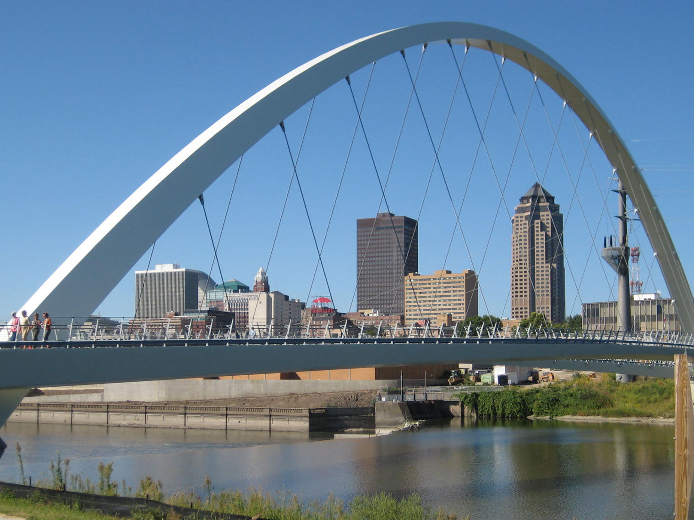
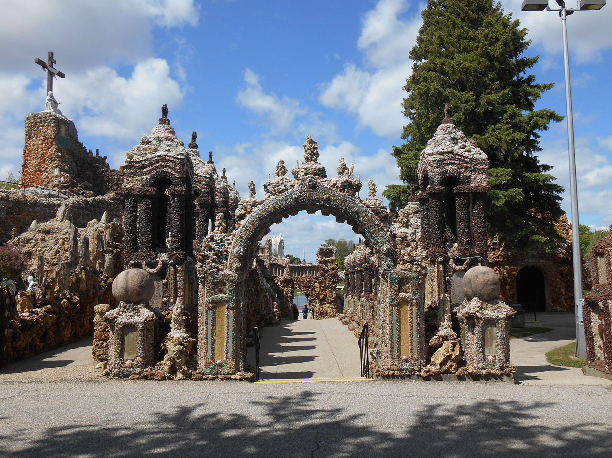

Iowa Travel Guide
Wander rolling farmland and charming small towns in Iowa, the safe, friendly heart of the Corn Belt, with covered bridges and the Field of Dreams.
Places to See in Iowa

Skyline downtown Des Moines
BarbaraLN, CC BY-SA 2.0, via Wikimedia Commons; Image Size Adjusted

Cities

The Grotto of the Redemption
Alejandro Pulido, CC BY-SA 4.0, via Wikimedia Commons; Image Size Adjusted

Landmarks and Landscapes
Overview
Iowa is a Midwestern state of about 3.2 million people that sits in the heart of the Corn Belt, where rolling farmland, small towns, and river bluffs set the pace of travel. The state capital and largest city is Des Moines, home to the Iowa State Capitol, a lively downtown, and the Iowa State Fair. Iowa takes its name from the Ioway people, one of the Native American nations that lived in the region.
Visitors come for the state's Americana: the covered bridges of Madison County, the Field of Dreams ballfield in Dyersville, the Dutch heritage of Pella, the German villages of the Amana Colonies, and the quirky Grotto of the Redemption. Others bike the High Trestle Trail or take part in RAGBRAI, the cross-state bicycle ride each July, explore the Mississippi River bluffs, or spend the summer at the Iowa Great Lakes near Okoboji.
Geography
Iowa lies between the Mississippi River on the east and the Missouri and Big Sioux Rivers on the west. Much of the state is gently rolling glacial plain that was once tallgrass prairie and is now productive farmland. The Loess Hills along the western border are formed of wind-blown silt several hundred feet thick, while the Driftless Area in the northeast was bypassed by glaciers and features steep hills, deep valleys, and limestone bluffs. Hawkeye Point, at 1,670 feet (509 m), is the state's highest natural point.
History
The Ioway, Meskwaki, Sioux, and other nations lived in the area for centuries before French explorers Marquette and Jolliet reached the Mississippi in 1673. The United States gained the region through the Louisiana Purchase in 1803, and settlement opened after the Black Hawk Purchase of 1833. Iowa Territory was organized in 1838, and Iowa became the 29th state on December 28, 1846. Pioneers on the Mormon Trail crossed southern Iowa, immigrants from Germany, the Netherlands, Bohemia, Scandinavia, and elsewhere built farm communities, and agriculture has remained the foundation of the state's economy.
Des Moines
Des Moines, the state capital and largest city, sits at the confluence of the Des Moines and Raccoon Rivers in central Iowa and is the center of the state's government, insurance, and finance industries. The gold-domed Iowa State Capitol is a landmark, and the city hosts the Iowa State Fair each August, one of the largest in the country, and the Iowa caucuses. Cultural highlights include the Pappajohn Sculpture Park, the Des Moines Art Center, the World Food Prize Hall of Laureates, and the Botanical Garden. The Riverwalk and the East Village have restaurants and shops, and the Saturday Downtown Farmers' Market is one of the biggest in the Midwest. Living History Farms recreates rural life from the 1700s to the early 1900s, and Terrace Hill is the governor's residence, a Victorian mansion open for tours.
Pella
Pella is a Dutch-heritage town in south-central Iowa, founded in 1847 by Dutch immigrants led by Dominie Hendrik Scholte who left the Netherlands for religious freedom. The town keeps its roots alive with Dutch-style architecture, a working windmill, canals, and a collection of historic buildings in the Historical Village. Each May the Tulip Time festival fills the town with more than 100,000 tulips, costumed dancers in wooden shoes, parades, and Dutch food such as Dutch letters (an almond pastry) and Pella bologna. Pella is also the home of Pella Corporation, the window manufacturer, and of Vermeer Corporation, whose Vermeer Museum and Global Pavilion shows agricultural and industrial equipment. The Scholte House Museum, once the home of the founder, is open for tours. Nearby Lake Red Rock, Iowa's largest lake, offers boating, camping, and trails.
The Bridges of Madison County
Madison County, south of Des Moines, is famous for its historic covered bridges, which were made famous by Robert James Waller's 1992 novel The Bridges of Madison County and the 1995 film starring Clint Eastwood and Meryl Streep. Six of the original 19 covered bridges survive and are on the National Register of Historic Places: the Cedar Covered Bridge, the Hogback Covered Bridge, the Holliwell Covered Bridge, the Imes Bridge, the Roseman Covered Bridge, and the Cutler-Donahoe Bridge, which was moved to the city park in Winterset. The bridges were built in the 1870s, painted red, and covered to protect the wooden floors from weather. Winterset, the county seat, is also the birthplace of John Wayne, with a museum in his honor, and the Covered Bridge Festival is held each October.
National Protected Areas
National Park Service sites in Iowa are modest in number but rich in story. Effigy Mounds National Monument in the Driftless Area protects more than 200 prehistoric mounds, many shaped like bears and birds, on bluffs above the Mississippi River. The Herbert Hoover National Historic Site in West Branch preserves the birthplace cottage of the 31st president, next to his presidential library. The Lewis and Clark and Mormon Pioneer National Historic Trails cross the state, and Neal Smith National Wildlife Refuge near Prairie City restores native tallgrass prairie and savanna.
State Parks and Historic Sites
Iowa's state parks are among its best surprises. Maquoketa Caves State Park has more caves than any other state park, Backbone State Park, Iowa's first, offers rocky ridges and trout streams, and Ledges State Park near Boone has sandstone canyons along Pea's Creek. Other favorites include Pikes Peak State Park overlooking the Mississippi River and Dolliver Memorial State Park. Historic highlights include the Old Capitol in Iowa City, the National Mississippi River Museum in Dubuque, and the Amana Colonies, a National Historic Landmark.
Seasons and When to Visit
Summer is the busiest season, with farmers markets, county fairs, RAGBRAI in July, and the Iowa State Fair in August, along with boating, camping, and cycling. Spring brings Pella's Tulip Time festival in May and strong birdwatching, while fall is a favorite for harvest scenery and colorful foliage in the Driftless Area and river valleys. Winters are cold and snowy, with cross-country skiing, ice fishing, snowmobiling, and cozy small-town holiday events, and travelers should be prepared for sudden temperature swings and spring storms.
This article uses material from the Wikipedia article "Iowa" which is released under the Creative Commons Attribution-Share-Alike License 3.0. Additional sources: National Park Service, Iowa Department of Natural Resources, State Historical Society of Iowa, and Travel Iowa.